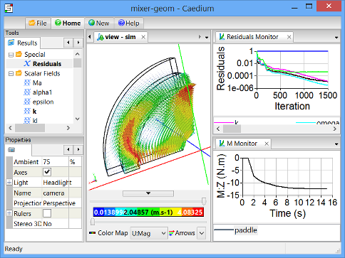

September 2012: New Caedium Tutorials
I hope you've had a chance to try the new Caedium v4 release we announced last month. To help you get started we added four tutorials covering some of the new capabilities. Keep reading for more details on the new tutorials and for the teasers to our recent blog posts.
New Caedium TutorialRotating paddle using moving reference frame
New Tutorials
Mixer Quadrant
Create an axi-symmetric quadrant of the fluid region around a mixer with paddles and baffles. The geometry is composed of multiple topological 6-sided blocks, often referred to as a multi-block topology. Each block can be meshed with structured hexahedra. Read more >>
Rotating Paddle using Moving Reference Frame
Simulate an incompressible, steady-state, turbulent water flow within a mixer with a rotating paddle using a Moving Reference Frame (MRF) in pseudo 2D. View velocity vectors and monitor the torque on the paddle. Read more >>
Water Tank
Create a water tank. The geometry is composed of multiple topological 6-sided blocks, often referred to as a multi-block topology. Each block can be meshed with structured hexahedra. Read more >>
Transient Water and Air Flow in a Tank
Simulate incompressible, transient (unsteady), turbulent water and air flow through a tank in pseudo 2D using the Volume Of Fluid (VOF) solver. View velocity vectors, visualize the interface between the air and the water, and create a movie. Read more >>
Recent Blog Posts
Ketchup with your CFD?
If you are a ketchup manufacturer then maintaining your ketchup at the right consistency is a primary concern - same goes for ketchup connoisseurs. A new procedure developed by Bandulasena, et al at the University of Sheffield combines a simple experimental observation and Computational Fluid Dynamics (CFD) to characterize the viscosity of a non-Newtonian fluid, such as ketchup, so we can be confident that our ketchup will flow. Read more >>
Why is CFD Difficult?
Of the 135 Symscape website visitors who voted in our latest poll, 37% cited mesh creation as the most difficult part of a Computational Fluid Dynamics (CFD) analysis. Configuring the geometry, deciding on physics and determining boundary conditions were clustered together as the next most difficult parts of CFD analysis. What is an engineer to do? Read more >>
Dam Break CFD Simulation
Can't get enough of Caedium's free surface simulations? Then this new post is for you. This animation shows a transient CFD simulation of a dam break over an obstacle. The simulation is performed in pseudo 2D, i.e., it is one cell thick. Read more >>
Free Surface Tank Filling CFD Simulation
This animation, created by Caedium Professional, shows a transient multiphase CFD simulation of water filling a tank that is initially filled with air. The free surface is shown as blue for the air-side surface and red for the water-side surface. Each frame of the animation was automatically rendered by POV-Ray (a ray-tracer) through Caedium. Read more >>
Feedback
Questions? Ideas? Problems?